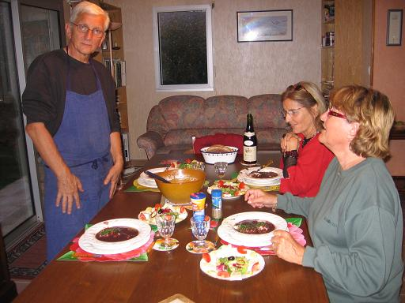

Recette
n° 72 :
Oeufs en meurette comme chez Mamy d'Armes

Ingrédients : (pour
4 personnes)
- 100 g de beurre ou
de margarine
- 8 Oeufs fermier extra-frais (cf. observation n°1 ci-dessous)
- 120 g de poitrine demi-sel
- 1 cuillère à soupe de ciboulette hachée
- 1 cuillère à soupe d' huile
- 4 carotte
- 2 échalote
- une bouteille de vin rouge très tannique
- 4 oignons
- Sel
- 20 cl de vinaigre d'alcool ou de vin
- sel et poivre, selon goût
Préparation :
- mettre le four à chauffer à 100C, y placer les
assiettes
Préparer
la
compote d'oignons : Eplucher et émincer finement
les oignons. Faire cuire
dans le beurre pendant 20 à 25 min environ, jusqu'à ce
qu'ils deviennent
fondants. Réserver au four couvert d'un papier d'aluminium
afin que cela
ne se désèche pas..
Confectionner
la
sauce au vin rouge : Verser le vin dans une casserole de taille
moyenne et
portez-la à ébullition. Dès qu'il commence
à bouillir, retirer la casserole du
feu et flamber le vin pour faire brûler l'alcool. Remettre
la casserole
sur le feu et laissez le vin réduire de moitié
- Hacher les
échalotes, ajouter à la réduction de vin et
laisser encore réduire. La
réduction doit être sirupeuse.
- Peler et laver les
carottes. Faire cuire à l'eau salée pendant 30 min.
Egoutter et passer au
mixeur pour les réduire en purée bien lisse.
- Incorporer la réduction de vin à la purée.
mélanger intimement et ajouter 50g
de beurre en fouettant. Goûter et rectifier éventuellement
l'assaisonnement
Faire
cuire les
lardons
- Couper la poitrine demi-sel en lardons. Faire sauter avec l'huile
pendant 5
min. Puis, poser sur du papier absorbant pour les dégraisser.
Faire cuire les oeufs pochés
- Mettre à chauffer une casserole remplie de 2 litres d'eau non
salée ; ajouter
le vinaigre et fair bouillir. Casser successivement chaque oeuf dans
une
tasse..
- Verser délicatement les oeufs, un par un au centre de la
casserole d'eau
vinaigrée, réduire aussitôt le feu et maintenir le
liquide frémissant. fNe
cuire les oeufs que 2 à la fois, afin qu'ils ne se
mélangent pas. Laisser cuire
environ 3 min, en veillant à bien vérifier la cuisson :
pour cela, prélever un
oeuf avec l'écumoire et appuyer délicatement sur l'oeuf
avec le doigt pour
constater que le blanc est coagulé et que le jaune reste bien
crémeux.Poser les
oeufs sur du papier absorbant ou sur un torchon, pour les
égoutter.
Dressez sur des assiettes chaudes
- Répartir la purée d'oignons au fond de chaque assiette
chaude, déposer 2
oeufs et quelques lardons, couvrir avec la sauce au vin rouge. Parsemer
de
ciboulette ciselée.
Observations :
1 - plus les oeufs sont frais, plus leur jaune est épais, et
mieux le
pochage s'effectue.
2- recette exécutée le 9 septembre 2006 à
Quiberon pour Mamy et moi, puis
refaites le 17 septembre pour 4 (Michel et Andrée Pioger en
polus).
3- le vin des oeufs était un Côtes du Marmandais,
excellent ; le vin
d'accompagnement un Irancy 2002 de chez Annick Navarre tout aussi
excellent